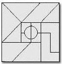
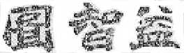

YI ZHI TU©
INVENTED by Mr. Tong, Ye'geng in July 1893, Yi Zhi Tu© is an interesting Chinese tangram puzzle. The patterns of the puzzle were drawn by his five sons including Mr. Tong, Da'nian. More than a hundred years later, in June 1996, designed by his great-grandson, Harry Yu Tong, Tongram® is a JavaTM applet that allows people all over the world to play Yi Zhi Tu© on Internet.
THE rule of the game is very simple: for each puzzle, the pattern is a Chinese character, you have to use all of the 15 game pieces to solve it. Each game piece can be moved, rotated and flipped. In Tongram® applet, it will draw those 15 game pieces for you starting at random locations. You can use mouse to drag any of the pieces. You can rotate the game piece that is currently selected (shown in red color) by clicking on the counter clockwise button (you may also try Shift Key + Left Mouse Button Click) or clicking on clockwise button( Single Right Mouse Button Click also works), you can also flip it by clicking on the flip button(Middle Mouse Button Click or Alt Key + Mouse Click will do the same thing). If you do not want to see the black border around the game pieces, uncheck the border box.
PLEASE select a puzzle and face the century old challenge:
This site has been accessed by visitors
since June 16, 1996.
 This page
is still under construction. Last updated on 08/03/97
This page
is still under construction. Last updated on 08/03/97
©1996, 1997 Harry Yu Tong & Diane Tong Tu